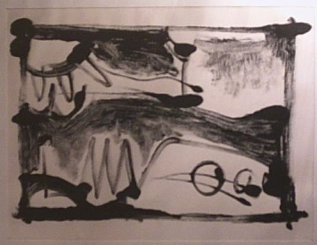

← Tutte le opereAll works
UR 042
PaesaggioPaesaggio
inchiostro di china, 1971Indian ink, 1971
- CatalogoCatalogue
- UR 042
- AnnoYear
- 1971
- TecnicaMedium
- inchiostro di chinaIndian ink
- TipoType
- pittura / incisionepainting / print
- DimensioniDimensions
- da completareto be completed
- CollocazioneLocation
- da completareto be completed
- VisteViews
- 1